ConnectSphere architecture diagrams
Current class, workflow and data models — 6 November 2026 — application build fb6d8d9.
20 updated models: four class views, 12 workflow sequences and four ERDs. All 85 API routes, 24 SQL tables, 243 columns and 55 foreign keys were checked against the implementation and an isolated migrated schema. C4 views retain the preceding accuracy corrections. Open an SVG to inspect the large models at full scale.
Workflow sequences
Registration withdrawal - owned record and event-start cutoff
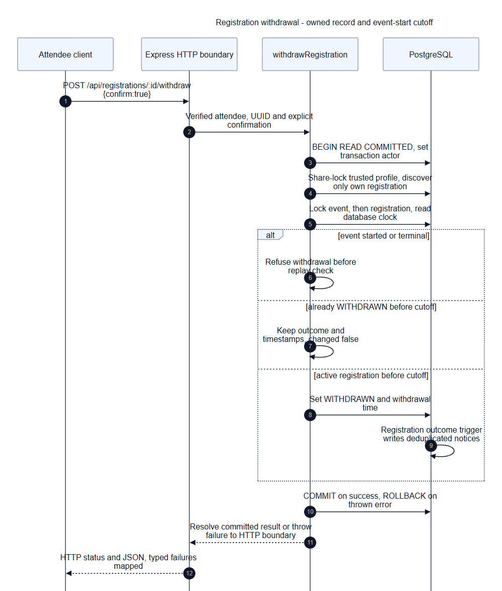
Event confirmation - live readiness under shared arrangement locks
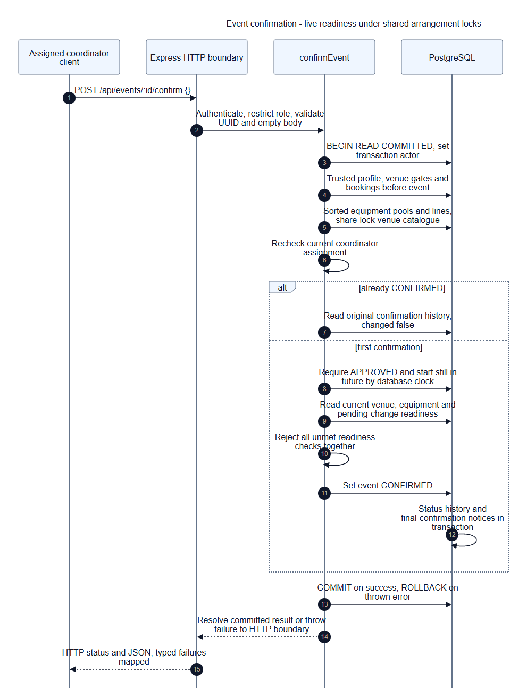
Event cancellation - arrangements and notices commit together
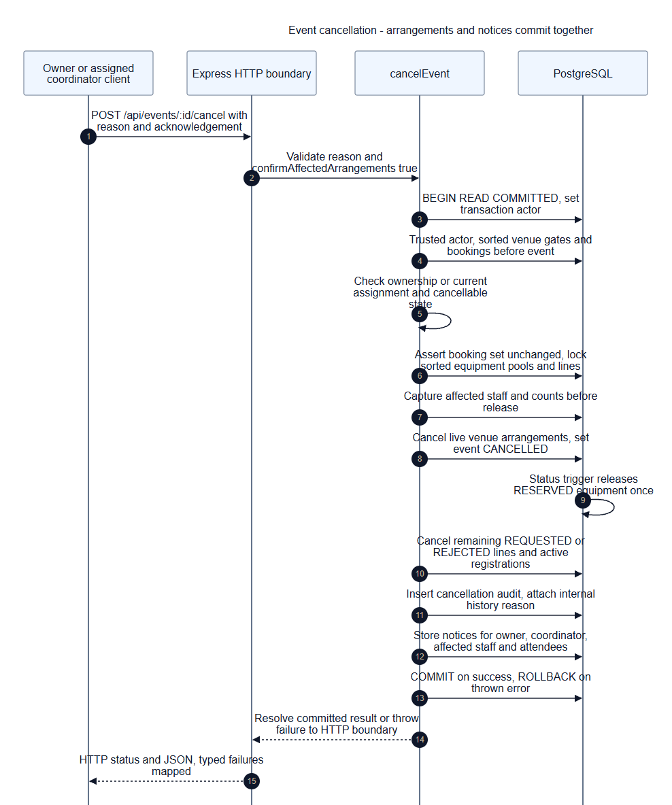
Lead allocation and handover - versioned assignment history
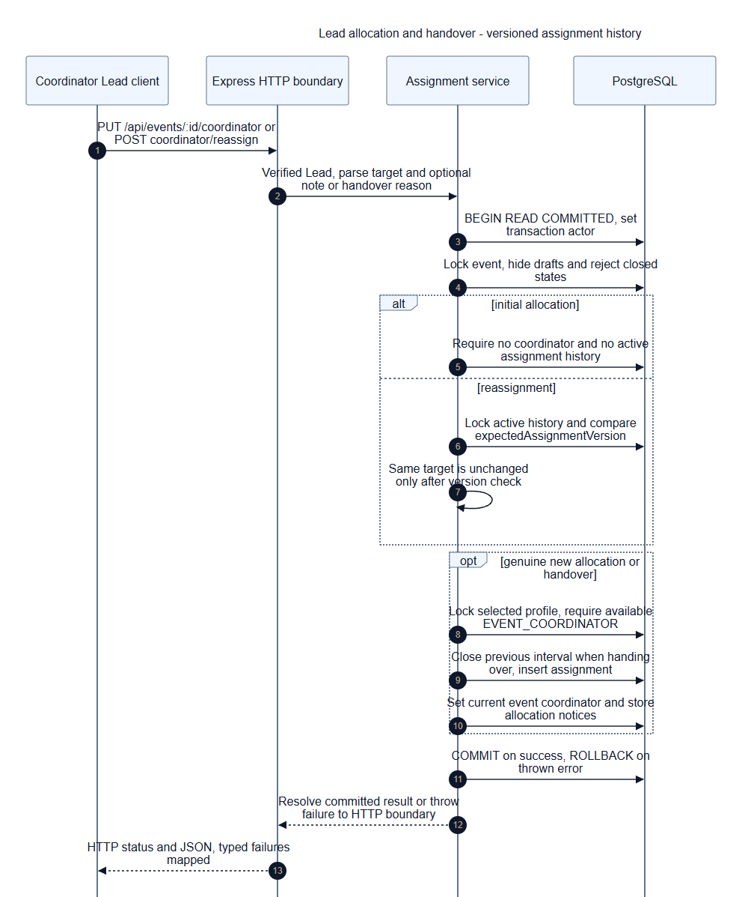
Equipment availability - advisory saved or what-if assessment
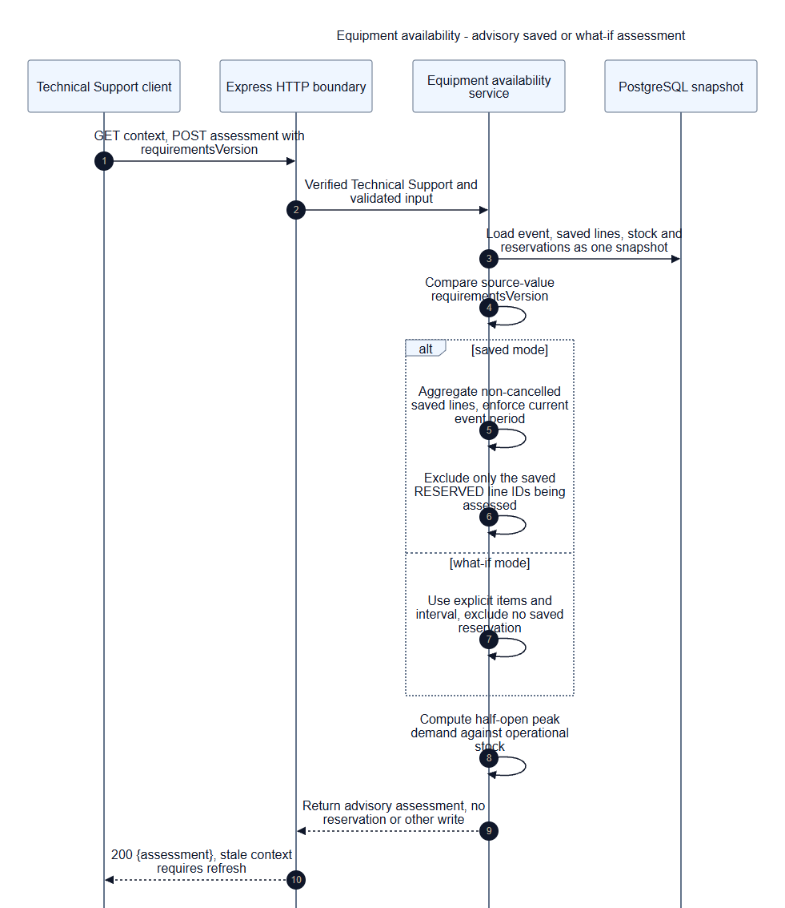
Equipment reservation - serialized stock and replay checks
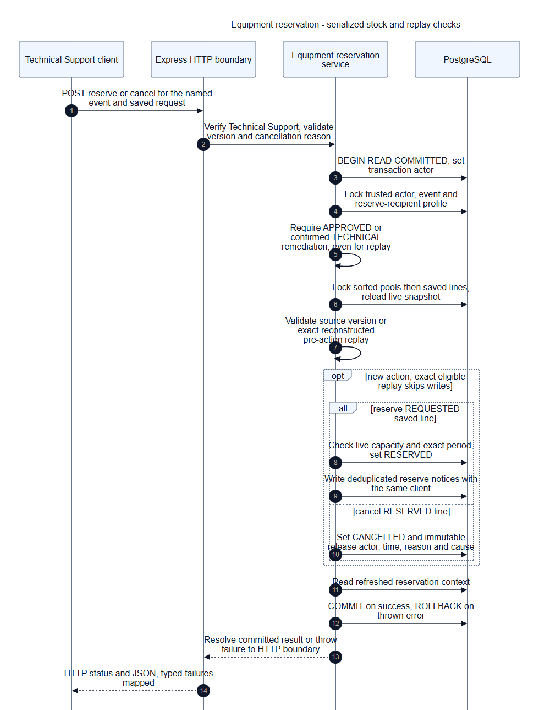
Safety review rounds and preparation - current approval required
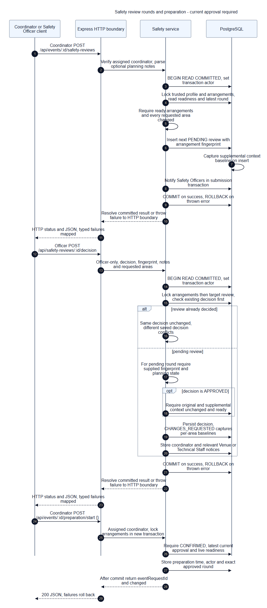
Venue writers - gates precede booking and event row locks
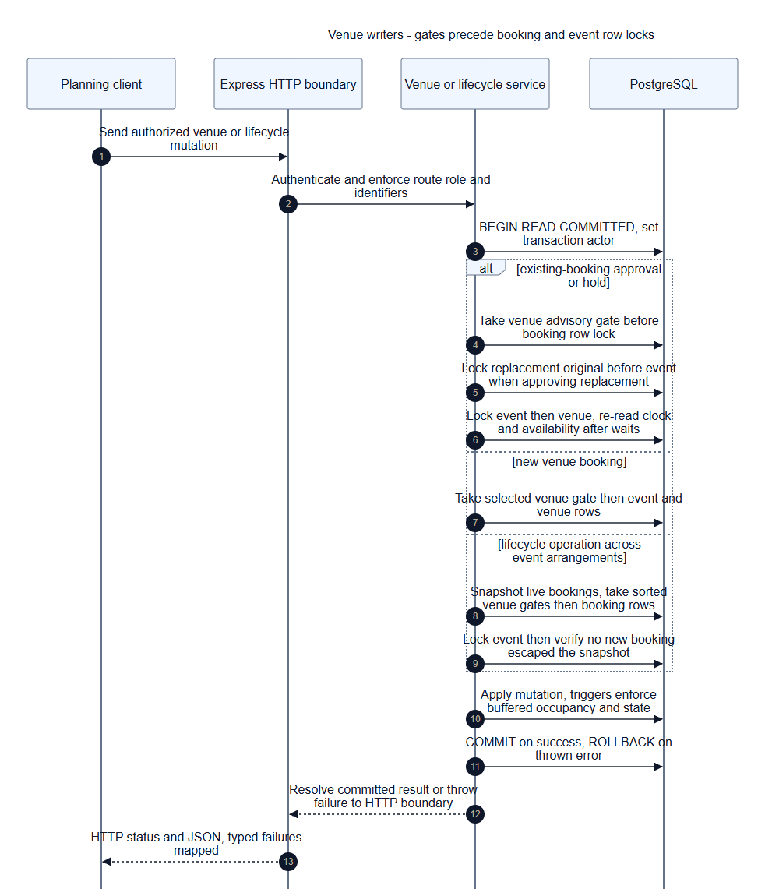
Venue temporary hold - deadline and automatic expiry
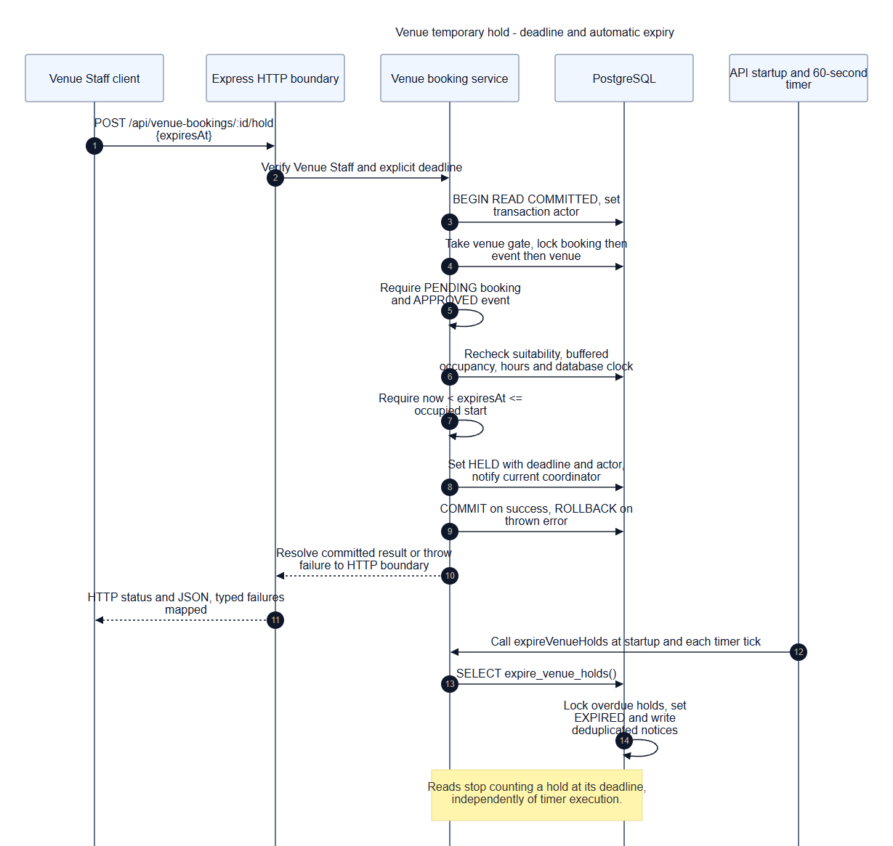
Venue outage - preserve approved booking and recover arrangements
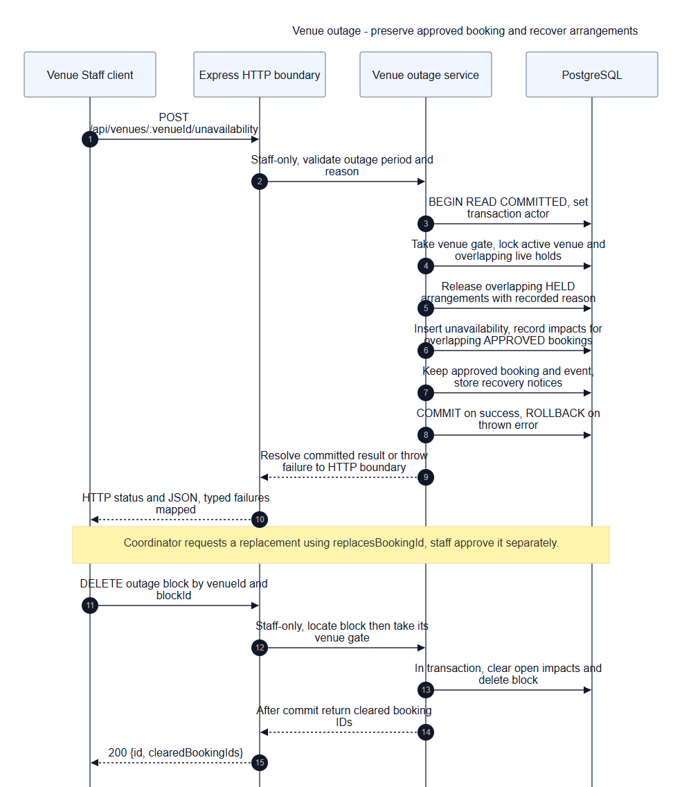
Event completion - ended confirmed event and equipment release
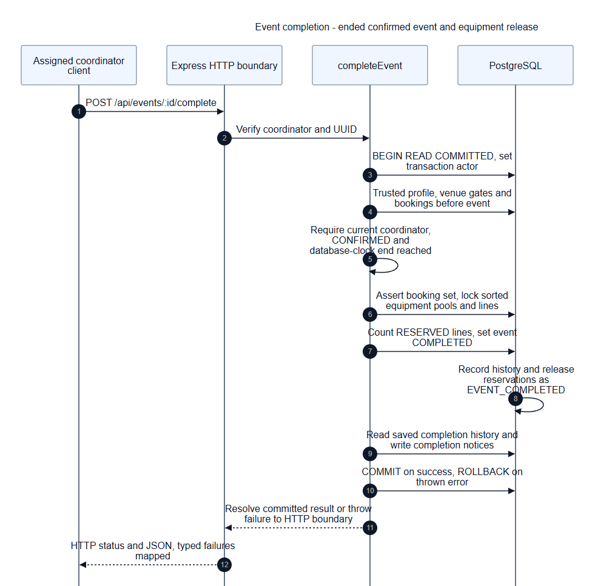
Significant planning change - reviewed revision and arrangement impact
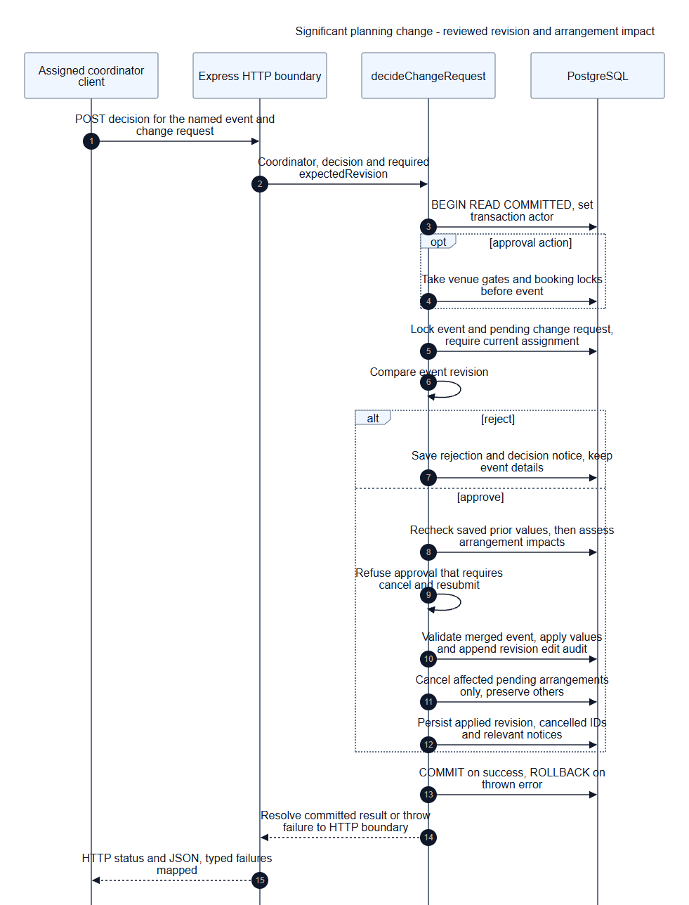
The genuine 1 October archive has no recorded class or sequence diagrams. Later originals are preserved in the before-update archive. Source and render checks do not establish live application acceptance.